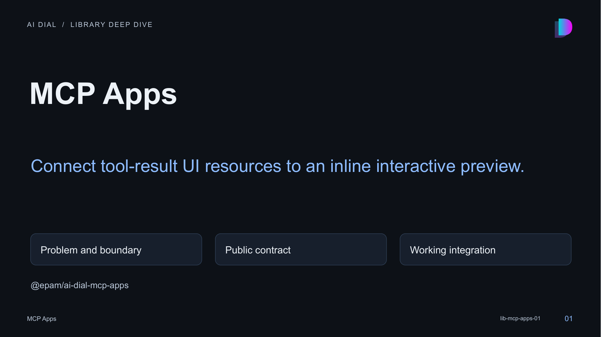

01 · MCP Apps

Speaker notes and sources
This session explains connect tool-result ui resources to an inline interactive preview. The library is a local private workspace package at libs/mcp-apps. Its manifest, source exports, tests and actual consumers were inspected. Package publication has not been verified; use the workspace integration shown here.
- libs/mcp-apps/README.md:1-148
- libs/mcp-apps/src/index.ts:1-31
- libs/mcp-apps/package.json:1-42
- libs/mcp-apps/src/components/McpAppInlinePreview/McpAppInlinePreview.tsx:247-247
- libs/mcp-apps/src/components/McpAppInlinePreview/McpAppInlinePreview.tsx:33-65